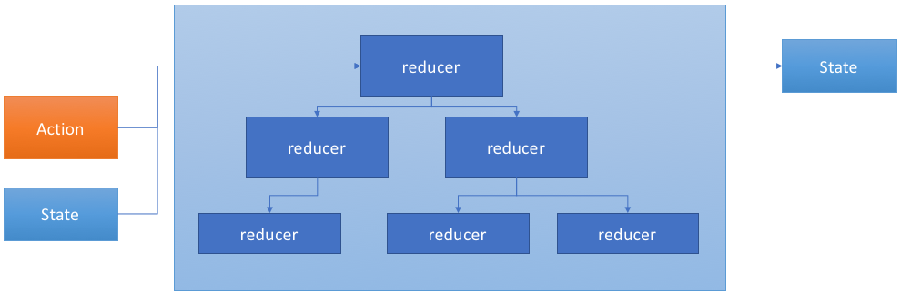
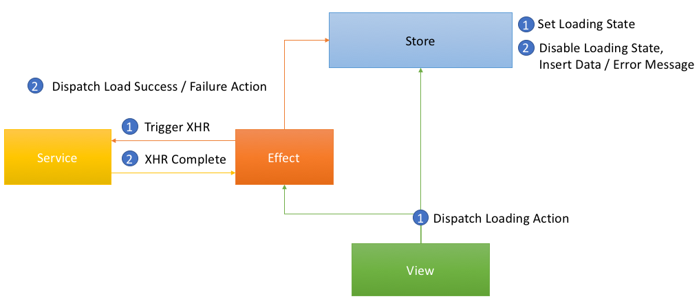
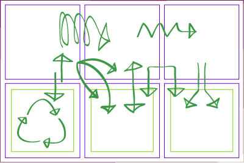
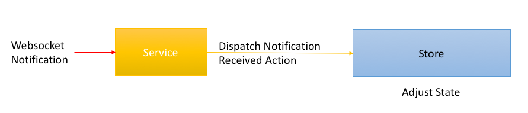
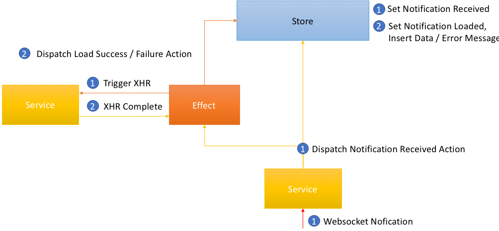

Philip Schmökel & Philipp Huber
UI = f ( State )
export function counterReducer(state: number = 0, action: Action): number {
let newState = state;
switch (action.type) {
case INCREMENT:
newState = state + 1;
case DECREMENT:
newState = state - 1;
case RESET:
newState = 0;
}
return newState;
}


Reactive State for Angular
“RxJS powered state management for Angular applications, inspired by Redux”
State is a single, immutable data structure.
export interface AppState {
name: string;
age: number;
showDropdown: boolean;
isUserLoggedIn: boolean;
}
State accessed with the Store, an observable of state and an observer of actions.
export class FlightComponent {
showSpinner$ = this.store.select(state => state.isLoading);
constructor(private store: Store<AppState>) {}
onInput(flightId: string) {
this.store.dispatch(FlightAction.loadFlight({flightId}));
}
}
Actions describe state changes.
this.store.dispatch(
FlightAction.loadFlight({flightId: '4711ABC'})
);
this.store.dispatch(
FlightAction.loadFlightSuccess({flight: loadedFlight})
);
this.store.dispatch(
FlightAction.loadFlightError({error: loadingError})
);
Pure functions called reducers take the previous state and the next action to compute the new state.
const flightReducer = createReducer(
initialState,
on(FlightAction.loadFlight,
(state: FlightState, { flightId }) =>
({ ...state, isLoading: true })
),
on(FlightAction.loadFlightSuccess,
(state: FlightState, { flight: loadedFlight }) =>
({ ...state,
error: null,
isLoading: false,
flight: loadedFlight })
),
on(FlightAction.loadFlightError...));
Checkout dumb vs smart components
... using Angular @Input syntax.

... using Angular @Output syntax.

Live Code Examples & Backup slides below
Following slides are not subject of the lecture.
Ask trainers in case of questions.

http://onehungrymind.com/build-better-angular-2-application-redux-ngrx/


Abstraction is the tradeoff which is not always worth it.